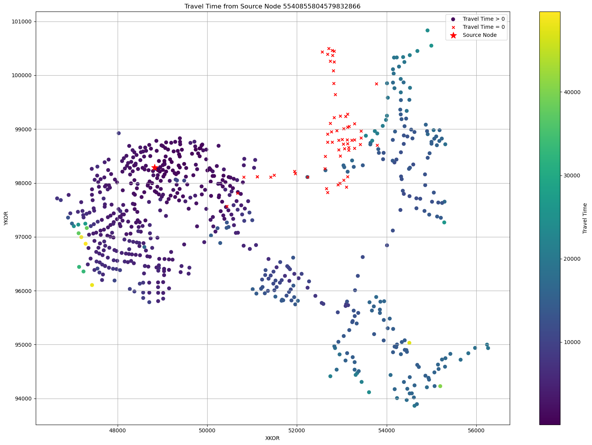
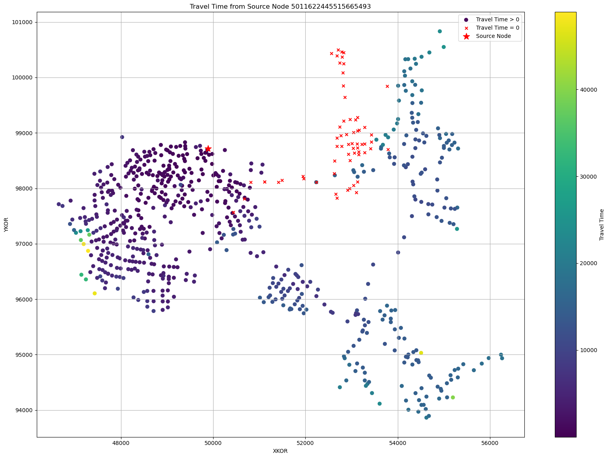

Example 9: Flow time matrix
This Example demonstrates how create a matrix that calculates the flow times between all nodes in a network using dataframes provided by PT3S.
PT3S Release
[1]:
#pip install PT3S -U --no-deps
Necessary packages for this Example
When running this example for the first time on your machine, please execute the cell below. Afterward, you may need to restart the kernel (using the ‘fast-forward’ button).[2]:
#pip install - q ...
Imports
[32]:
import os
import logging
import re
import pandas as pd
import numpy
import pandas as pd
from shapely.geometry import LineString
import matplotlib.pyplot as plt
from collections import deque
import networkx
from scipy.sparse import csc_matrix
#...
try:
from PT3S import dxAndMxHelperFcts
except:
import dxAndMxHelperFcts
try:
from PT3S import Rm
except:
import Rm
#...
[33]:
import importlib
[34]:
#importlib.reload(dxAndMxHelperFcts)
Logging
[35]:
logger = logging.getLogger()
logFileName= r"Example9.log"
loglevel = logging.DEBUG
logging.basicConfig(filename=logFileName
,filemode='w'
,level=loglevel
,format="%(asctime)s ; %(name)-60s ; %(levelname)-7s ; %(message)s")
fileHandler = logging.FileHandler(logFileName)
logger.addHandler(fileHandler)
consoleHandler = logging.StreamHandler()
consoleHandler.setFormatter(logging.Formatter("%(levelname)-7s ; %(message)s"))
consoleHandler.setLevel(logging.INFO)
logger.addHandler(consoleHandler)
Read Model and Results
[36]:
dbFilename="Example5"
dbFile=os.path.join(os.path.dirname(os.path.abspath(dxAndMxHelperFcts.__file__))
+'/Examples/'
+dbFilename
+'.db3'
)
[37]:
m=dxAndMxHelperFcts.readDxAndMx(dbFile=dbFile
,preventPklDump=True
,maxRecords=-1
)
INFO ; Dx.__init__: dbFile (abspath): c:\users\aUserName\3s\pt3s\PT3S\Examples\Example5.db3 exists readable ...
INFO ; Dx.__init__: dbFile (abspath): c:\users\aUserName\3s\pt3s\PT3S\Examples\Example5.db3 exists readable ...
INFO ; PT3S.dxAndMxHelperFcts.readDxAndMx:
+..\PT3S\Examples\Example5.db3 is newer than
+..\PT3S\Examples\WDExample5\B1\V0\BZ1\M-1-0-1.1.MX1:
+SIR 3S' dbFile is newer than SIR 3S' mx1File
+in this case the results are maybe dated or (worse) incompatible to the model
INFO ; PT3S.dxAndMxHelperFcts.readDxAndMx:
+..\PT3S\Examples\Example5.db3 is newer than
+..\PT3S\Examples\WDExample5\B1\V0\BZ1\M-1-0-1.1.MX1:
+SIR 3S' dbFile is newer than SIR 3S' mx1File
+in this case the results are maybe dated or (worse) incompatible to the model
INFO ; Mx.setResultsToMxsFile: Mxs: ..\PT3S\Examples\WDExample5\B1\V0\BZ1\M-1-0-1.1.MXS reading ...
INFO ; Mx.setResultsToMxsFile: Mxs: ..\PT3S\Examples\WDExample5\B1\V0\BZ1\M-1-0-1.1.MXS reading ...
INFO ; dxWithMx.__init__: Example5: processing dx and mx ...
INFO ; dxWithMx.__init__: Example5: processing dx and mx ...
[38]:
#...
Prepare data
Get all edges
[39]:
df_edges=m.V3_VBEL
[40]:
df_edges=df_edges.reset_index()
[41]:
df_edges=df_edges[['OBJID', 'OBJTYPE', 'tk_i', 'tk_k', 'NAME_i', 'NAME_k']]
[42]:
df_edges=df_edges.rename(columns={'OBJID': 'tk', 'tk_i': 'tki', 'tk_k': 'tkk'})
[43]:
df_edges.head(3)
[43]:
| tk | OBJTYPE | tki | tkk | NAME_i | NAME_k | |
|---|---|---|---|---|---|---|
| 0 | 5175187672733343279 | FWES | 5203537039580738995 | 5416018875301313090 | R-B1 | V-B1 |
| 1 | 5237816858835684263 | FWES | 5386207966798159734 | 4904045401911412301 | R-A1x | V-A1x |
| 2 | 4615167946623235098 | FWVB | 5748663417295233893 | 5076580037121965427 | V-1172 | R-1172 |
[44]:
print(df_edges['OBJTYPE'].unique())
['FWES' 'FWVB' 'KLAP' 'OBEH' 'PGRP' 'PUMP' 'REGV' 'ROHR' 'VENT']
Get all nodes
[45]:
df_nodes=m.V3_KNOT
[46]:
df_nodes=df_nodes[df_nodes['KVR']==1.0]
[47]:
df_nodes.head(3)
[47]:
| pk | fkDE | rk | tk | NAME | KTYP | XKOR | YKOR | ZKOR | QM_EIN | ... | (STAT, KNOT~*~*~*~PMIN_INST, 2024-01-09 23:00:00, 2024-01-09 23:00:00) | (STAT, KNOT~*~*~*~QM, 2024-01-09 23:00:00, 2024-01-09 23:00:00) | (STAT, KNOT~*~*~*~RHO, 2024-01-09 23:00:00, 2024-01-09 23:00:00) | (STAT, KNOT~*~*~*~T, 2024-01-09 23:00:00, 2024-01-09 23:00:00) | (STAT, KNOT~*~*~*~VOLD, 2024-01-09 23:00:00, 2024-01-09 23:00:00) | PH | QM | dPH | srcvector | T | |
|---|---|---|---|---|---|---|---|---|---|---|---|---|---|---|---|---|---|---|---|---|---|
| 0 | 4678355169005004036 | 5613149064237404433 | 4678355169005004036 | 4680103632661687203 | V-3354 | QKON | 55176.323661 | 98780.494875 | 29.299999 | 0.0 | ... | 9.574781 | 0.0 | 939.375854 | 125.030182 | 0.0 | 8.574781 | 0.0 | 3.116916 | [0, 100] | 125.030182 |
| 1 | 5759822415014073091 | 5613149064237404433 | 5759822415014073091 | 5540855804579832866 | V-1503 | QKON | 48826.419913 | 98285.548412 | 30.500000 | 0.0 | ... | 9.352022 | 0.0 | 935.382263 | 129.797485 | 0.0 | 8.352022 | 0.0 | 2.917446 | [100, 0] | 129.797485 |
| 3 | 5468959419408453250 | 5613149064237404433 | 5468959419408453250 | 5025567272877293202 | V-3604 | QKON | 53007.627163 | 98806.657826 | 26.600000 | 0.0 | ... | 9.856769 | 0.0 | 936.526306 | 128.467102 | 0.0 | 8.856769 | 0.0 | 3.175158 | [96, 4] | 128.467102 |
3 rows × 152 columns
Determine length, velocity, flow time, geometry per edge
[48]:
df_pipes=m.gdf_ROHR
[49]:
vav_cols = [col for col in df_pipes.columns if re.search(r'VAV', str(col))]
[50]:
print(vav_cols)
[('STAT', 'ROHR~*~*~*~VAV', Timestamp('2024-01-09 23:00:00'), Timestamp('2024-01-09 23:00:00')), 'VAVAbs']
[51]:
v=vav_cols[0] # we use the signed value
[52]:
df_edges = df_edges.merge(
df_pipes[['tk', v, 'L', 'geometry']],
on='tk',
how='left',
)
[53]:
df_edges = df_edges.rename(columns={v: "v"})
we assume dt=0.001 for non-pipe edges
[54]:
DEFAULT_DT = 0.001
df_edges['dt'] = df_edges.apply(
lambda row: row['L'] / row['v'] if pd.notnull(row['L']) and pd.notnull(row['v']) and row['v'] != 0 else DEFAULT_DT,
axis=1
)
[55]:
df_edges.head(3)
[55]:
| tk | OBJTYPE | tki | tkk | NAME_i | NAME_k | v | L | geometry | dt | |
|---|---|---|---|---|---|---|---|---|---|---|
| 0 | 5175187672733343279 | FWES | 5203537039580738995 | 5416018875301313090 | R-B1 | V-B1 | NaN | NaN | None | 0.001 |
| 1 | 5237816858835684263 | FWES | 5386207966798159734 | 4904045401911412301 | R-A1x | V-A1x | NaN | NaN | None | 0.001 |
| 2 | 4615167946623235098 | FWVB | 5748663417295233893 | 5076580037121965427 | V-1172 | R-1172 | NaN | NaN | None | 0.001 |
Travel Time Matrix
Implementation
[56]:
TMAX_DETECT = 1.0e12
[57]:
def setup_graph(df_data_results_edges):
"""Setup graph from edges data and results.
Parameters
----------
df_data_results_edges: pandas.DataFrame
Edges data and results.
Returns
-------
G : networkx.Graph
Graph.
"""
# Nodes: index mapping (here via tk of nodes, alternatively via names of nodes)
list_nodes_tk = sorted(list(set(list(df_data_results_edges["tki"]) + list(df_data_results_edges["tkk"]))))
map_nodes_tk_ind = {list_nodes_tk[ii]: ii for ii in range(len(list_nodes_tk))}
# Adapt DataFrame
df_data_results_edges["indi"] = df_data_results_edges["tki"].apply(lambda x: map_nodes_tk_ind[x])
df_data_results_edges["indk"] = df_data_results_edges["tkk"].apply(lambda x: map_nodes_tk_ind[x])
df_data_results_edges["indi_new"] = df_data_results_edges[["indi", "indk"]].min(axis=1)
df_data_results_edges["indk_new"] = df_data_results_edges[["indi", "indk"]].max(axis=1)
df_data_results_edges["dt_new"] = numpy.sign(df_data_results_edges["indk"] - df_data_results_edges["indi"])*df_data_results_edges["dt"]
# Setup graph
G = networkx.Graph()
for _, row in df_data_results_edges.iterrows():
G.add_edge(
row['indi_new'], # Start node
row['indk_new'], # End node
# Additional edge attributes
dt=row['dt_new']
)
# Out
return G, map_nodes_tk_ind
[58]:
def bfs_observedNodes(G, source, tmax):
"""Breadth-first-search starting at source.
Parameters
----------
G : networkx.Graph
Graph.
source : int
Source node.
tmax : float
Maximum travel time.
"""
visited = set([source])
neighbors = G.neighbors
queue = deque([(source, neighbors(source))])
dt_travel_sum = {source: 0.0}
while queue:
parent, children = queue[0]
try:
child = next(children)
edge = (min(parent, child), max(parent, child))
sign_dt = numpy.sign(child - parent)
dt_travel = sign_dt*G[edge[0]][edge[1]]['dt']
dt_travel_sum[child] = dt_travel_sum[parent] + numpy.abs(dt_travel)
if ((child not in visited) and (dt_travel_sum[child] < tmax) and dt_travel < 0.0):
yield parent, child
visited.add(child)
queue.append((child, neighbors(child)))
except StopIteration:
queue.popleft()
[59]:
def setup_travelTimeMatrix(df_data_results_edges):
"""Setup travel time matrix from edges data and results.
Parameters
----------
df_data_results_edges: pandas.DataFrame
Edges data and results.
Returns
-------
TMat : numpy.ndarray
Travel time matrix.
map_nodes_tk_ind : dict
Mapping nodes tk to index.
"""
# Setup graph
G, map_nodes_tk_ind = setup_graph(df_data_results_edges)
# Find sets of observed nodes by bfs search and setup matrix V
obsNodes = {}
obsNodesL = {}
travelTimesAccObsNodesDict = {}
for iSens in G.nodes:
bfs_edges = list(bfs_observedNodes(G, iSens, TMAX_DETECT))
nodesSet = set()
endNodeLDict = {}
for (lli, llk) in bfs_edges:
nodesSet.add(lli)
nodesSet.add(llk)
edgex = (min(lli, llk), max(lli, llk))
endNodeLDict[llk] = G[edgex[0]][edgex[1]]['dt']
if (len(nodesSet) > 0):
obsNodes[iSens] = nodesSet - {iSens}
obsNodesL[iSens] = endNodeLDict
# Calculate travel time matrix data
edgesListUse = []
for edgex in bfs_edges:
(ix, kx) = edgex
ix_new, kx_new = min(ix, kx), max(ix, kx)
weight = abs(G[ix_new][kx_new]['dt'])
edgesListUse.append((ix_new, kx_new, weight))
Gtrav = networkx.Graph()
if (len(edgesListUse) > 0):
Gtrav.add_weighted_edges_from(edgesListUse)
travelTimesAccObsNodesDict[iSens] = networkx.single_source_dijkstra_path_length(
Gtrav, source=iSens, cutoff=None, weight='weight')
# Setup travel time matrix
rowsTTrav = []
columnsTTrav = []
dataTTrav = []
for iSens in obsNodes.keys():
# travel time from node to sensor
ttravs = travelTimesAccObsNodesDict[iSens]
for iObserved in ttravs:
rowsTTrav.append(iSens)
columnsTTrav.append(iObserved)
dataTTrav.append(ttravs[iObserved])
TMatSparse = csc_matrix((dataTTrav, (rowsTTrav, columnsTTrav)), shape=(len(G.nodes), len(G.nodes)))
# Trafo to dense matrices
TMat = 1.0*TMatSparse.toarray()
# Out
return TMat, map_nodes_tk_ind
Use
[60]:
TMat, map_nodes_tk_ind = setup_travelTimeMatrix(df_edges)
This method can calculate shortest travel time between two nodes. It shows us from a choosen source node how long water takes to reach all other nodes in the network based on the the length of pipes and the calculated velocity of water inside them, we get the flow time per pipe (dt = L / v). We do not consider the amount of flow (QM = pi/4 * DN^2 *v) going through the pipes nor the source spectrum.
If we want to determine how the water flows through differnt paths from one source to another destination node we encounter issues, as all paths that are not the shortest are negletected, even if their flow is higher then the shortest path (eg. due to DN difference). We also dont differentiate between water originating from different hot water sources (Fernwaermeeinspeiser). For this application I do not see the travel time matrix of use.
[61]:
numpy.set_printoptions(linewidth=200)
TMat.round(1)
[61]:
array([[ 0. , 14778.2, 16027.8, ..., 22093.4, 1465.5, 5964.8],
[15975.7, 0. , 11128.1, ..., 13145.8, 17441.2, 14289.8],
[16297.5, 10200.3, 0. , ..., 17515.5, 17763. , 14611.6],
...,
[ 0. , 0. , 0. , ..., 0. , 0. , 0. ],
[10794.8, 16212.1, 17461.7, ..., 23527.3, 0. , 6438.7],
[55182.7, 62482.6, 63732.2, ..., 69797.8, 55407.1, 0. ]])
Plot
[62]:
def plot_flow_time_from_source(source_tk, travel_time_matrix, map_nodes_tk_ind, df_nodes):
# Reverse the mapping to get index -> tk
map_ind_tk = {v: k for k, v in map_nodes_tk_ind.items()}
# Filter df_nodes based on XKOR > 40000 and YKOR > 80000
df_nodes_filtered = df_nodes[(df_nodes['XKOR'] > 40000) & (df_nodes['YKOR'] > 80000)]
# Create a mapping from tk to coordinates
tk_to_coords = df_nodes_filtered.set_index('tk')[['XKOR', 'YKOR']].to_dict('index')
# Get source index
if source_tk not in map_nodes_tk_ind:
print(f"Source tk {source_tk} not found in mapping.")
return
source_index = map_nodes_tk_ind[source_tk]
travel_times = travel_time_matrix[source_index]
# Prepare lists for plotting
x_nonzero, y_nonzero, c_nonzero = [], [], []
x_zero, y_zero = [], []
for idx, time in enumerate(travel_times):
tk = map_ind_tk.get(idx)
if tk in tk_to_coords:
x, y = tk_to_coords[tk]['XKOR'], tk_to_coords[tk]['YKOR']
if idx == source_index:
continue # skip source node
if time == 0.0:
x_zero.append(x)
y_zero.append(y)
else:
x_nonzero.append(x)
y_nonzero.append(y)
c_nonzero.append(time)
plt.figure(figsize=Rm.DINA3q)
scatter = plt.scatter(x_nonzero, y_nonzero, c=c_nonzero, cmap='viridis', s=40, label='Travel Time > 0')
plt.scatter(x_zero, y_zero, color='red', marker='x', s=25, label='Travel Time = 0')
# Mark the source node
if source_tk in tk_to_coords:
x_src, y_src = tk_to_coords[source_tk]['XKOR'], tk_to_coords[source_tk]['YKOR']
plt.scatter(x_src, y_src, color='red', marker='*', s=150, label='Source Node')
plt.colorbar(scatter, label='Travel Time')
plt.xlabel('XKOR')
plt.ylabel('YKOR')
plt.title(f'Travel Time from Source Node {source_tk}')
plt.legend()
plt.grid(True)
plt.tight_layout()
plt.show()
[63]:
df_nodes.head(5)
[63]:
| pk | fkDE | rk | tk | NAME | KTYP | XKOR | YKOR | ZKOR | QM_EIN | ... | (STAT, KNOT~*~*~*~PMIN_INST, 2024-01-09 23:00:00, 2024-01-09 23:00:00) | (STAT, KNOT~*~*~*~QM, 2024-01-09 23:00:00, 2024-01-09 23:00:00) | (STAT, KNOT~*~*~*~RHO, 2024-01-09 23:00:00, 2024-01-09 23:00:00) | (STAT, KNOT~*~*~*~T, 2024-01-09 23:00:00, 2024-01-09 23:00:00) | (STAT, KNOT~*~*~*~VOLD, 2024-01-09 23:00:00, 2024-01-09 23:00:00) | PH | QM | dPH | srcvector | T | |
|---|---|---|---|---|---|---|---|---|---|---|---|---|---|---|---|---|---|---|---|---|---|
| 0 | 4678355169005004036 | 5613149064237404433 | 4678355169005004036 | 4680103632661687203 | V-3354 | QKON | 55176.323661 | 98780.494875 | 29.299999 | 0.0 | ... | 9.574781 | 0.0 | 939.375854 | 125.030182 | 0.0 | 8.574781 | 0.0 | 3.116916 | [0, 100] | 125.030182 |
| 1 | 5759822415014073091 | 5613149064237404433 | 5759822415014073091 | 5540855804579832866 | V-1503 | QKON | 48826.419913 | 98285.548412 | 30.500000 | 0.0 | ... | 9.352022 | 0.0 | 935.382263 | 129.797485 | 0.0 | 8.352022 | 0.0 | 2.917446 | [100, 0] | 129.797485 |
| 3 | 5468959419408453250 | 5613149064237404433 | 5468959419408453250 | 5025567272877293202 | V-3604 | QKON | 53007.627163 | 98806.657826 | 26.600000 | 0.0 | ... | 9.856769 | 0.0 | 936.526306 | 128.467102 | 0.0 | 8.856769 | 0.0 | 3.175158 | [96, 4] | 128.467102 |
| 4 | 5526072131156860534 | 5613149064237404433 | 5526072131156860534 | 4660263951317730783 | V-IHAF1 | QKON | 47711.710479 | 98384.669793 | 27.600000 | 0.0 | ... | 8.944877 | 0.0 | 938.919312 | 125.600891 | 0.0 | 7.944877 | 0.0 | 1.545254 | [100, 0] | 125.600891 |
| 6 | 4775668378312608776 | 5613149064237404433 | 4775668378312608776 | 5294552132139044612 | V-1723 | QKON | 48064.236585 | 97197.304005 | 33.200001 | 0.0 | ... | 8.403908 | 0.0 | 936.008301 | 129.101837 | 0.0 | 7.403908 | 0.0 | 1.526738 | [98, 2] | 129.101837 |
5 rows × 152 columns
[64]:
plot_flow_time_from_source("5540855804579832866", TMat, map_nodes_tk_ind, df_nodes)

Plot from actual sources (Ferwaermeeinspeiser)
A: 5011622445515665493 B: 5152316559510921719
[65]:
plot_flow_time_from_source("5011622445515665493", TMat, map_nodes_tk_ind, df_nodes)
